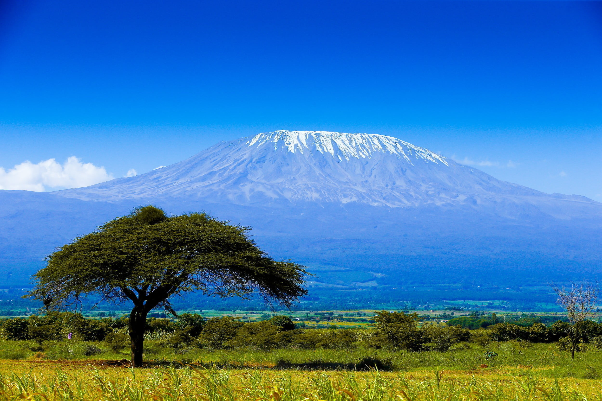

キリマンジャロとは？

あまりコーヒーを飲まない人でも、一度はその名前を聞いたことがあるはず。タンザニア、キリマンジャロ山のふもとで生産されるアラビカ種のコーヒー豆で、その品質の高さから知名度と人気も高い銘柄です。ブルーマウンテン、コナと並んで世界三大コーヒーとも呼ばれています。現地の協会によって厳しい品質管理が行われており、豆のサイズや色などの条件によってAA等級~C等級までの格付けが存在します。
キリマンジャロの産地と歴史
キリマンジャロが栽培されるのは、キリマンジャロ山の中腹、標高2000m付近。適度な高地であるだけでなく、火山性の肥沃な土壌で雨量も豊富であることから、アラビカ種のコーヒーの栽培によく適した環境だと言えるでしょう。一粒一粒が太っていて大きく、芳醇香りを持った上質な豆が育ちます。
もともとタンザニアは雨の多い地域で、コーヒー栽培が始まった当初は気候が合わずうまくいきませんでした。ですが、そこから次第に高地で栽培することで高品質な豆が採れるようになり、やがて特にキリマンジャロ山の中腹で栽培が盛んに行われるようになりました。
もともとタンザニアは雨の多い地域で、コーヒー栽培が始まった当初は気候が合わずうまくいきませんでした。ですが、そこから次第に高地で栽培することで高品質な豆が採れるようになり、やがて特にキリマンジャロ山の中腹で栽培が盛んに行われるようになりました。
キリマンジャロの味わい
キリマンジャロの味において、特筆すべきはその強い「酸味」「コク」と、甘い「香り」です。フルーティで柑橘系の果物のような上品な酸味がすっきりとした飲み口で、それでいて深いコクがあることから、「野性味あふれる味」とも表現されます。香りはバニラを思わせるように甘く華やかで、豆の状態でも香るほど芳醇な香りがするそう。
特徴的な酸味の味わいから、果物系のスイーツとの相性も◎。フルーツの入ったケーキやタルトなどと一緒に味わっても美味しいでしょう。
特徴的な酸味の味わいから、果物系のスイーツとの相性も◎。フルーツの入ったケーキやタルトなどと一緒に味わっても美味しいでしょう。